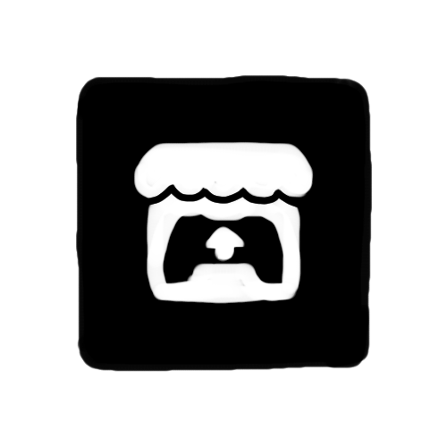

Indie Developer · Void Architect · Paper & Darkness
001 — About
I'm Syronch — an indie developer building strange, minimalist experiences somewhere between crumpled paper and infinite checkered floors.Download the launcher and see what lives in the dark.
002 — Find Me
